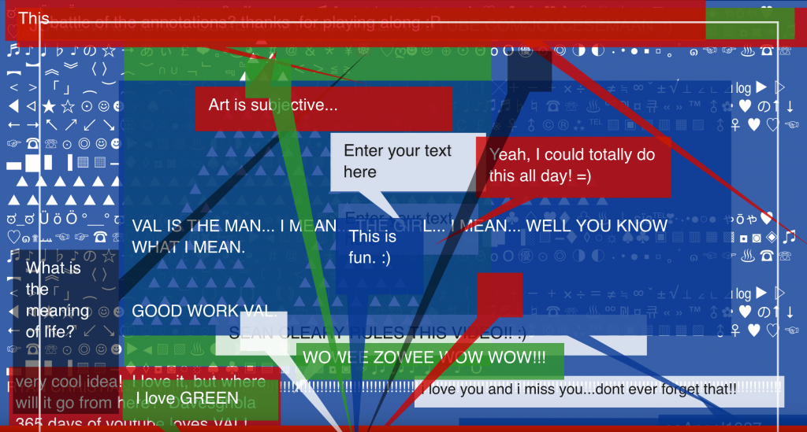
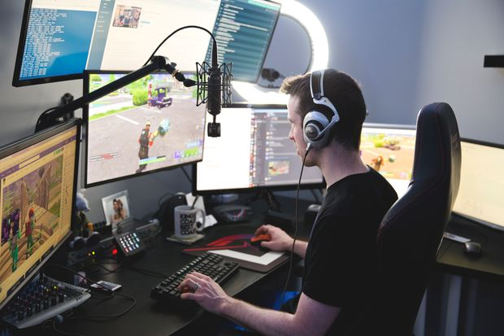
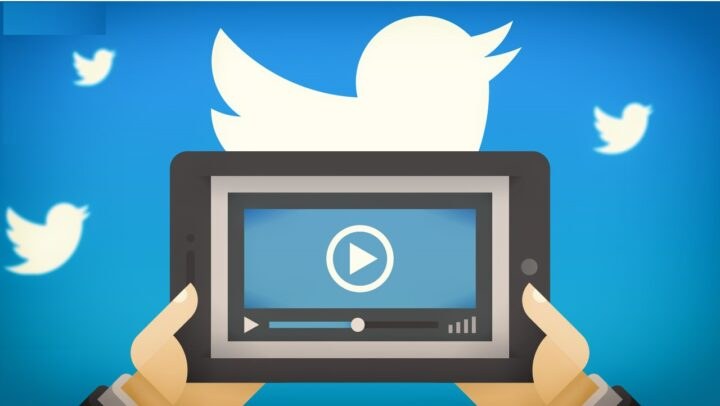

The first interactive function of Youtube is Annotation.
From 2008 to 2017, users were able to add
"annotations" to movies, such as pop-up text messages and
hyperlinks. These functions are explicitly used as the basis for
interactive visuals, which use hyperlinks to other visuals to
implement branching elements. In March 2017, it
was announced that the Annotation's editor was being discontinued
and that the feature would be phased out due to its plummeting
usage, user boredom, and incompatibility with the mobile version
of the service. On January 15, 2019, all comments
in the film were completely removed.
(Image: YouTube's first video, "Me at the Zoo," also updated its narrative in 2013 with a red comment box at the top of the frame.)

With the rise of online video and audio platforms, network
broadcast is a form of entertainment in which instant images are
broadcast publicly on the Internet. Webcast is still most commonly
used in rebroadcasting entertainment-related content, in which the
host performing or hosting the webcast is generally called the
streamer.
The concept of webcast originated from Justin.tv, which began to explore the feasibility of technologies related to personal webcast in 2007 and later transformed into Twitch, which focuses on the real-time broadcast by capturing players' game images.

Following Twitch's live-streaming trend, YouTube has been showing
videos that call themselves "live" since 2012.
However, in practice, some films were only broadcasted through post-production, rather than real-time means such as live-streaming or online streaming. The creators who uploaded these films could only be considered YouTubers or gamers, not streamers. In late 2015, the social networking site Facebook also made streaming available. At the same time, Douyu TV and Panda TV also rose in mainland China. In the early stage, users can directly broadcast live from mobile devices (such as smartphones and tablet computers), and in the later stage, they can also broadcast live on computers.
YouTube quickly adapted to the trend of mass communication. The most significant difference between streaming and uploading their videos is that viewers can interact with the anchor in real-time by leaving messages. The anchor can adjust the program content or please the audience according to the audience's response.
Following Twitch's live-streaming trend, YouTube has been
showing videos that call themselves "live" since 2012.
However, in practice, some films were only broadcasted through post-production, rather than real-time means such as live-streaming or online streaming. The creators who uploaded these films could only be considered YouTubers or gamers, not streamers. In late 2015, the social networking site Facebook also made streaming available. At the same time, Douyu TV and Panda TV also rose in mainland China. In the early stage, users can directly broadcast live from mobile devices (such as smartphones and tablet computers), and in the later stage, they can also broadcast live on computers.
(YouTube link: Example of Famous Streaming)
Annotation
(Image: YouTube's first video, "Me at the Zoo," also updated its narrative in 2013 with a red comment box at the top of the frame.)
Streaming
The concept of webcast originated from Justin.tv, which began to explore the feasibility of technologies related to personal webcast in 2007 and later transformed into Twitch, which focuses on the real-time broadcast by capturing players' game images.
Trend Of YouTube Streaming
How to stream on Youtube
However, in practice, some films were only broadcasted through post-production, rather than real-time means such as live-streaming or online streaming. The creators who uploaded these films could only be considered YouTubers or gamers, not streamers. In late 2015, the social networking site Facebook also made streaming available. At the same time, Douyu TV and Panda TV also rose in mainland China. In the early stage, users can directly broadcast live from mobile devices (such as smartphones and tablet computers), and in the later stage, they can also broadcast live on computers.
YouTube quickly adapted to the trend of mass communication. The most significant difference between streaming and uploading their videos is that viewers can interact with the anchor in real-time by leaving messages. The anchor can adjust the program content or please the audience according to the audience's response.
Trend Of YouTube Streaming
However, in practice, some films were only broadcasted through post-production, rather than real-time means such as live-streaming or online streaming. The creators who uploaded these films could only be considered YouTubers or gamers, not streamers. In late 2015, the social networking site Facebook also made streaming available. At the same time, Douyu TV and Panda TV also rose in mainland China. In the early stage, users can directly broadcast live from mobile devices (such as smartphones and tablet computers), and in the later stage, they can also broadcast live on computers.
(YouTube link: Example of Famous Streaming)